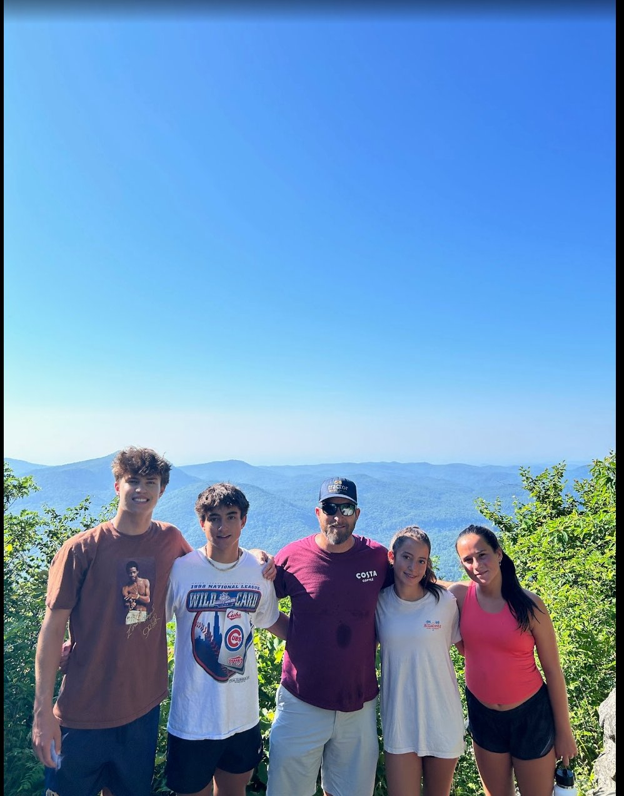
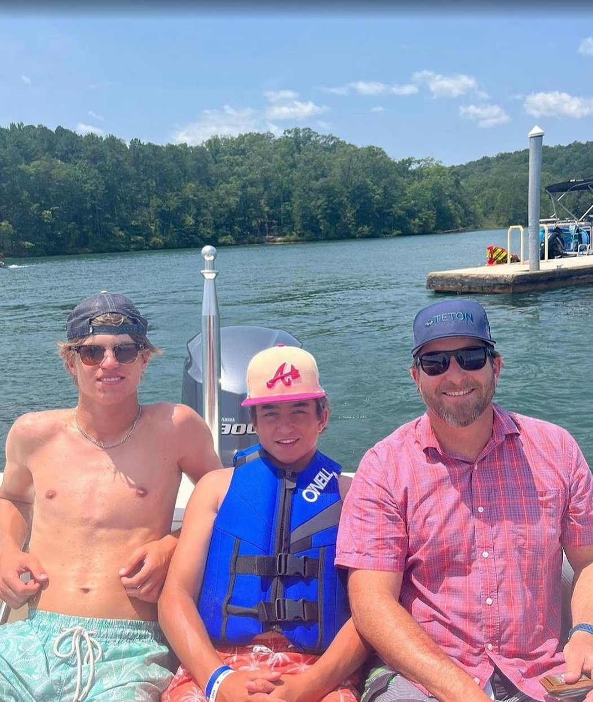
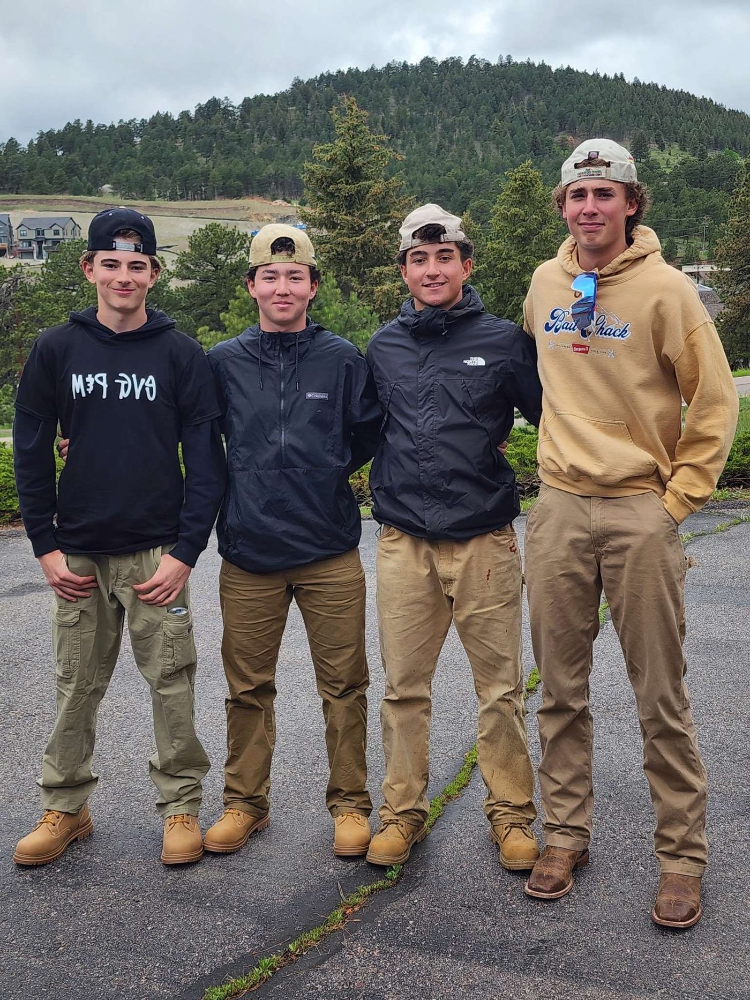
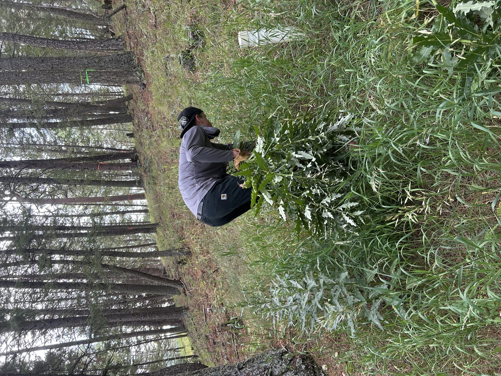

Una colección de mi mejor trabajo en español — escrito, verbal e interpersonal.
¿Cómo te llamas? ¿Dónde vives? Describe un poco de ti.
Me llamo George Hughen. Vivo en Evergreen, Colorado.
Tengo 17 años y estoy terminando mi tercer año de preparatoria en Evergreen High School. Juego mucho al béisbol y estoy en el equipo Rockies Scout Team. También tengo una compañía de jardinería.
Me gusta mejorar cada día, trabajar en mi jardín y pasar tiempo en las montañas. Tengo dos hermanas y me gusta pasar tiempo con mis amigos.

Written work showing my ability to express myself in multiple paragraphs.
La persona que más admiro es mi papá. Él es muy importante en mi vida. Mi papá es de los Estados Unidos y trabaja mucho todos los días para ayudar a nuestra familia. Él es mi padre y también es un buen ejemplo para mí.
Mi papá es una persona trabajadora, amable y responsable. Le gusta pasar tiempo con la familia y ayudar a otras personas. También es fuerte y siempre quiere hacer lo correcto.
Yo admiro a mi papá porque siempre me ayuda y me apoya. Él me enseña a trabajar duro y a no rendirme.
Mi papá es muy importante en mi vida. Por él, quiero ser una buena persona y trabajar duro para mis metas.

El Día de los Niños es un día festivo en México que celebra a los niños el 30 de abril. Es similar al Día de la Madre en los Estados Unidos porque las dos fiestas celebran a una persona especial en la familia. Sin embargo, son diferentes porque en los EE. UU. no tenemos un día especial solo para los niños. En El Día de los Niños, las familias dan regalos, comen comida deliciosa y hacen actividades divertidas con los niños. Yo creo que sería una buena idea celebrar este día en los EE. UU. porque los niños son importantes y merecen un día especial también.
Voice recordings demonstrating my speaking ability in Spanish.
Una grabación sobre el problema de Laura y cómo lo resolvió.
¿Qué era el problema de Laura?
¿Cómo lo resolvió?
¿Qué palabras nuevas aprendí?
▶ Escuchar grabaciónUna grabación sobre lo que les molesta a Pámela y a Juan.
Lo que más le molesta a Pámela
Lo que más le molesta a Juan
¿Qué quiere Pámela en un amigo?
▶ Escuchar grabaciónA real conversation I had with classmates on Padlet about El Día de la Madre.
En esta conversación de Padlet, comparé cómo se celebra el Día de la Madre en Perú y en los Estados Unidos. Mis compañeros Jake y Will me hicieron preguntas, y yo respondí con detalles sobre las tradiciones de mi propia familia.
My interests: béisbol, mi compañía, y mis planes para el futuro.
¿Qué me gusta? Me gusta jugar al béisbol, hacer day trading, jugar pickleball, trabajar en las montañas, cortar césped y quitar juníperos. También me gusta viajar y mejorar en todo lo que hago.
¿Qué he hecho este año? Este año he viajado mucho para béisbol a México, Costa Rica, California, Georgia, Florida y Arizona. También he pasado tiempo con mis amigos y mi familia, y he trabajado mucho en mi compañía de jardinería.
¿Qué quiero hacer en el futuro? En el futuro quiero seguir jugando al béisbol, crecer mi negocio y vivir en Costa Rica cuando sea mayor. También quiero seguir mejorando y tener éxito en la vida.

